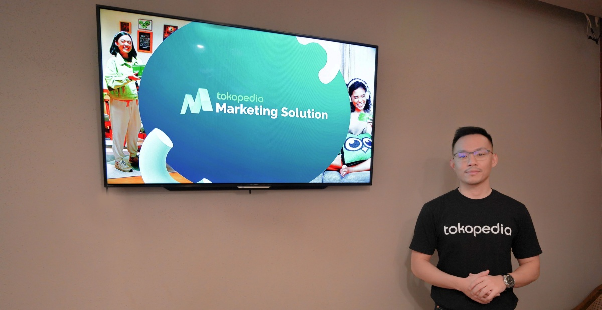

Mengenal Tokopedia Marketing Solutions, Solusi Pemasaran
Menyeluruh Bagi Pelaku Bisnis di Indonesia
02 November 2023

Jakarta, 22 September 2022 - Tokopedia, sebagai perusahaan teknologi Indonesia, menghadirkan
Tokopedia
Marketing Solutions guna mempermudah mitra strategis, khususnya pelaku bisnis di Indonesia dari
berbagai
skala, untuk memaksimalkan potensi platform e-commerce dalam strategi pemasarannya.
VP of Marketing Solutions Tokopedia, Edwin Chayadi, menjelaskan, “Tokopedia Marketing Solutions
merupakan
solusi pemasaran menyeluruh dari Tokopedia untuk membantu pelaku bisnis mencapai tujuan promosi dan
menghasilkan pertumbuhan bisnis yang berkelanjutan.
Melalui Tokopedia Marketing Solutions, para pelaku bisnis di Indonesia bisa mendapatkan berbagai
keuntungan, antara lain menjangkau lebih banyak pengguna Tokopedia yang tersebar di 99% kecamatan,
presence di seluruh consumer purchase journey mulai dari saat konsumen mengeksplor halaman utama
Tokopedia, mencari produk, ataupun dari media sosial Tokopedia.
Tokopedia Marketing Solutions juga bisa membantu pelaku bisnis menargetkan iklan ke profil konsumen
yang
tepat lewat pemanfaatan data konsumen sesuai regulasi yang berlaku serta prinsip keamanan dan
perlindungan data pribadi.
Serta always-on-marketing, yang memberikan kemudahan dalam membuat, mengelola, dan memaksimalkan
iklan
dengan teknologi sehingga pelaku bisnis bisa lebih fokus mengembangkan usahanya.
Pelaku bisnis di Indonesia bisa memanfaatkan berbagai kanal promosi yang ditawarkan Tokopedia
Marketing
Solutions untuk mengembangkan bisnis, antara lain dengan promosi di halaman utama Tokopedia,
menggunakan
fitur beriklan TopAds agar produk tampil teratas di halaman pencarian, dan beriklan di fitur
Pencarian.
Ada pula fitur iklan di halaman Notifikasi dan Pesan, yang mencakup Broadcast Chat (untuk
mempromosikan
produk langsung di inbox/kotak masuk pengguna), Push Notifications (penjual bisa mengirim pesan
promosi
untuk mengarahkan calon pembeli ke halaman toko) dan Notification Center (promosi akan muncul di
halaman
notifikasi pengguna).
Penjual yang menggunakan Tokopedia Marketing Solutions juga bisa beriklan dalam sebuah permainan
interaktif, seperti Tap Tap Kotak, yang berhadiah kupon atau cashback, mempromosikan produk/toko
melalui
tayangan di kanal streaming Tokopedia Play, serta memaksimalkan media sosialnya menggunakan
Collaborative Ads bersama Tokopedia.
“Keuntungan yang ditawarkan Tokopedia Marketing Solutions terbukti efektif. Kami mencatat bahwa per
semester I 2022, Tokopedia Marketing Solutions mengalami pertumbuhan nilai investasi iklan sebesar
17
kali lipat, dan pertumbuhan jumlah mitra strategis dari penjual berskala menengah sampai besar
sebanyak
30 kali lipat,” tambah Edwin.
Berbagai pelaku bisnis di Indonesia, dari beragam skala dan kategori, telah merasakan manfaat dari
Tokopedia Marketing Solutions. Misalnya sebuah brand fesyen berhasil mendapatkan peningkatan sebesar
103% pada rata-rata jumlah pesanan.
Ada juga sebuah perusahaan FMCG yang memperoleh 146% peningkatan pendapatan dan peningkatan jumlah
pemesanan 169%. Serta brand makanan dan minuman yang mendapatkan peningkatan pendapatan rata-rata
sebesar 156% dan 279% pada rata-rata jumlah pemesanan.
“Ke depannya, Tokopedia Marketing Solutions akan terus berupaya membantu pelaku bisnis di Indonesia
dari berbagai skala dan kategori, untuk mengakselerasi performa bisnis mereka di Tokopedia guna
membantu pemulihan ekonomi nasional lewat pemanfaatan kanal digital,” tutup Edwin.